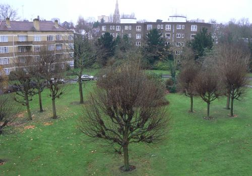
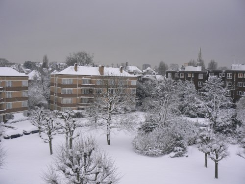
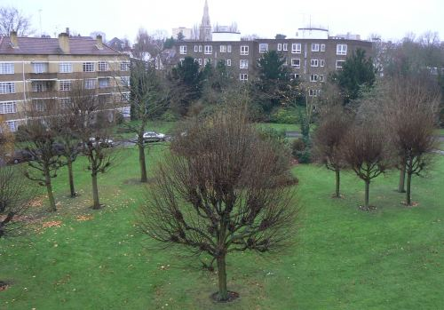
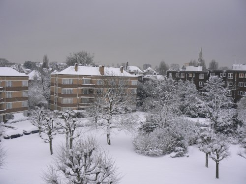

☰ Contents |
 |
|---|
☰ Contents |
|
|---|
How has your appearance changed over the years? What about your children’s? Your parents’? Your garden’s? What about the last few, very noisy, months of the construction site at the bottom of the road; going from ground breaking to an upmarket apartment block? If you want to visualise such changes, grab the photos and let Zoetic show you.
What is Zoetic?
Given a series of images, Zoetic produces a video of the images’ subject changing over time. The series would typically be either:

 





What Zoetic is NOT
https://www.youtube.com/channel/UC9DS_eg5oE_9HmVVYuUBkNw
| Back | Contents | Your first project |
|---|